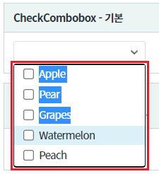
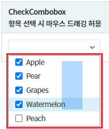
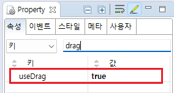

[CheckCombobox] 항목 선택하기 - 마우스 드래깅
1개요
컴포넌트 목록의 항목을 마우스로 드래깅하여 선택하는 예제입니다.
2구현된 기능
기본
항목을 마우스로 드래깅하여 선택하기
3예제 테스트 방법
3.1기본 상태
그림 1.브라우저(Chrome) 실행 예시 - 기본 동작 - 마우스 드래깅으로 항목이 선택되지 않는 상태

3.2항목을 마우스로 드래깅하여 선택할 수 있는 상태
그림 2.브라우저(Chrome) 실행 예시 - 마우스 드래깅으로 항목을 선택할 수 있는 상태

4구현 예시
4.1목록 데이터 할당하기
컴포넌트의 목록으로 출력될 데이터를 할당합니다. 하드 코딩, 스크립트로 할당, DataList 연동 모두 가능합니다. 데이터 할당하는 예시는 생략합니다.
목록의 데이터 할당 방법은 아래의 링크를 통해 확인할 수 있습니다.
[웹스퀘어5 SP5 개발 가이드] CheckComboBox 항목 설정
링크 : https://docs1.inswave.com/sp5_user_guide/8df43d1f59fab704#60e5063481c9c2ff
4.2항목 선택 시 마우스 드래그 허용하기
컴포넌트의 속성을 정의합니다.
useDrag="true" //항목 선택 시 마우스 드래그 허용 여부. 기본값은 false 입니다.
그림 3.웹스퀘어5 SP5 스튜디오의 Property View(속성창) 예시

<!-- CheckCombobox의 소스 본문 예시 --> <xf:checkcombobox useDrag="true"> <!-- 중략 --> </xf:checkcombobox>
5주요 API
useDrag
6참고 문서
[웹스퀘어5 SP5 개발 가이드] CheckComboBox
링크 : https://docs1.inswave.com/sp5_user_guide/8df43d1f59fab704#00d68253341f365d
[웹스퀘어5 SP5 개발 가이드] CheckComboBox 마우스 드래깅을 통한 선택 및 연속된 값 표시
링크 : https://docs1.inswave.com/sp5_user_guide/8df43d1f59fab704#12db2e2c0c70c538
7참고 동영상
CheckComboBox 마우스 드래깅을 통한 선택 및 연속된 값 표시
링크 : https://youtu.be/rvPiBK7qh2o